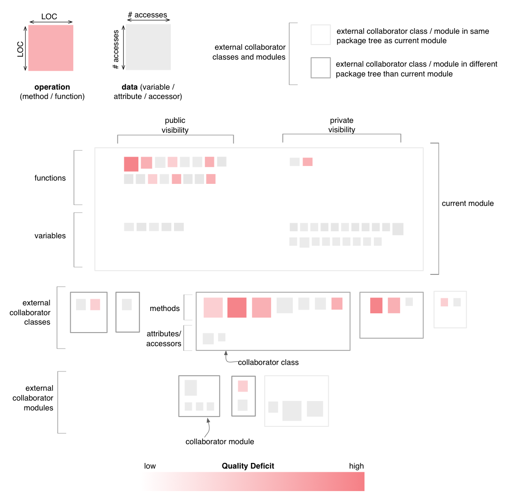

Module Map - Design Flaws Perspective
The Design Flaws Perspective of the Module Map
colors all operations in the map, including those belonging to
collaborator classes and modules, based on the aggregated severity of
all the design flaws affecting them. This
coloring uses a white to red gradient, with darker shades of
red for higher aggregated severity.

Entity selection
The user may select an operation or a data in the map, in
which case the selected entity is colored in green. Everything else
remains the same.
Other quality perspectives
Cohesion,
Complexity, Coupling, Encapsulation
Metrics used
LOC